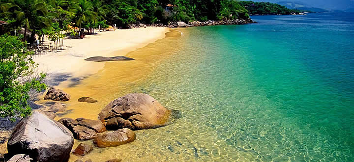
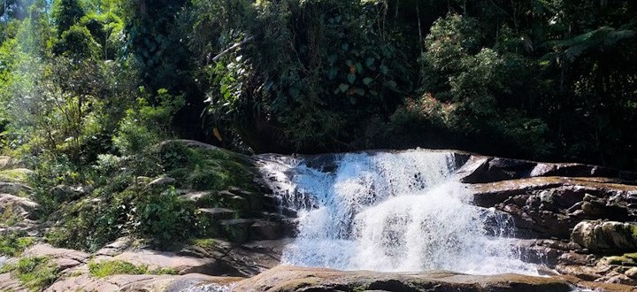

Paraty é uma pequena cidade com montanhas como pano de fundo na Costa Verde do Brasil, entre o Rio de Janeiro e São Paulo, considerada Patrimônio Histórico-Cultural pelo IPHAN. O seu centro colonial português possui ruas calcetadas e edifícios dos séculos XVII e XVIII da altura em que funcionava como um porto, durante o ciclo do ouro brasileiro.
Em construção.
